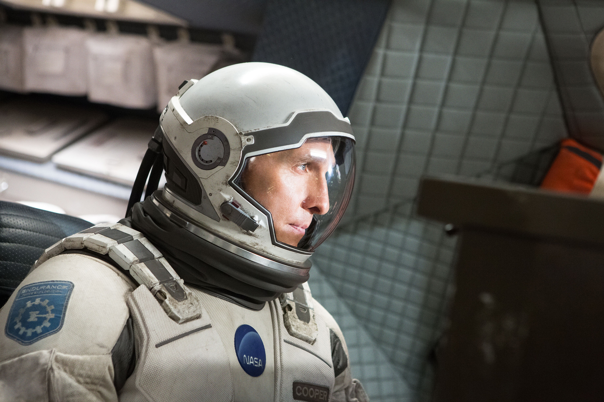
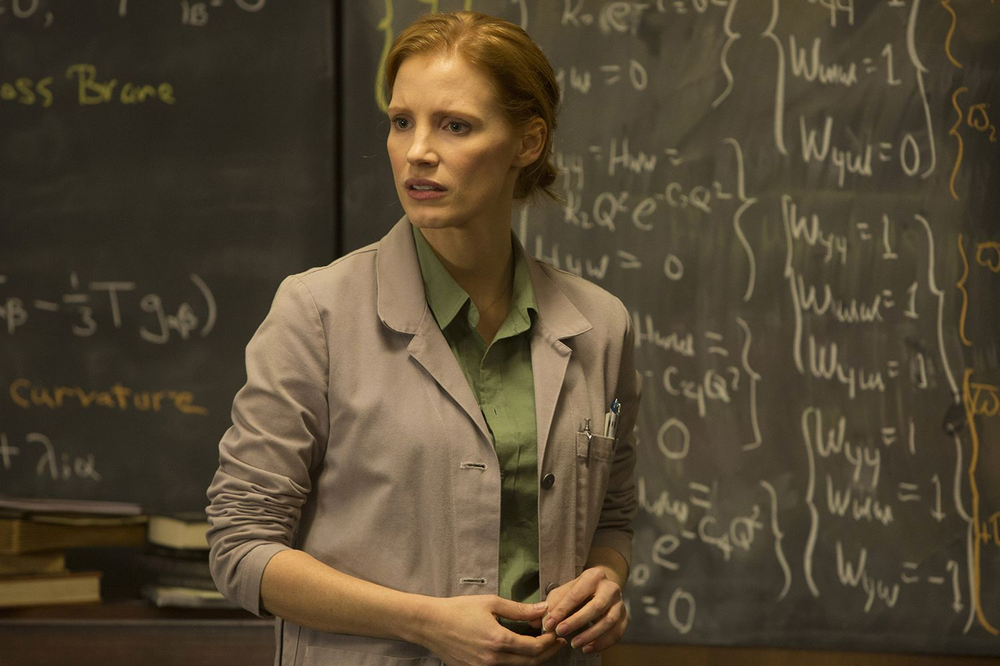
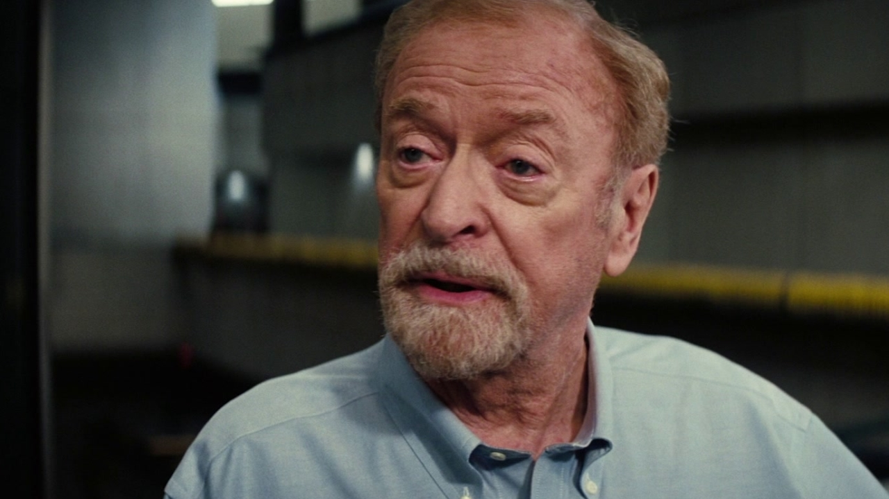
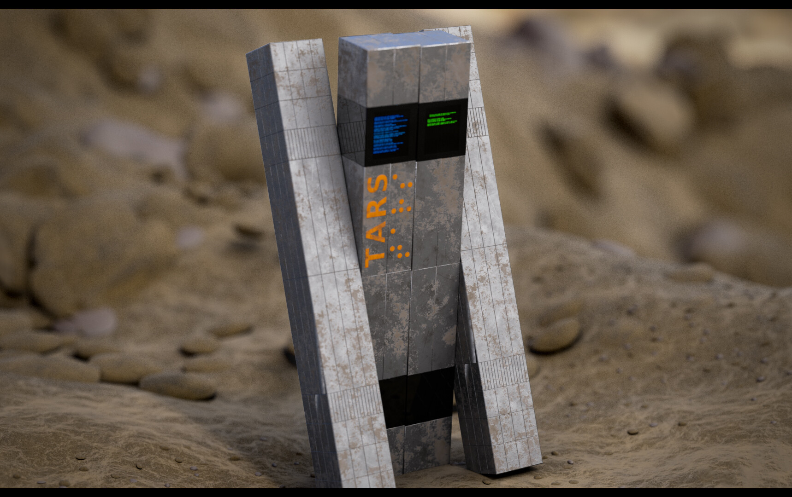
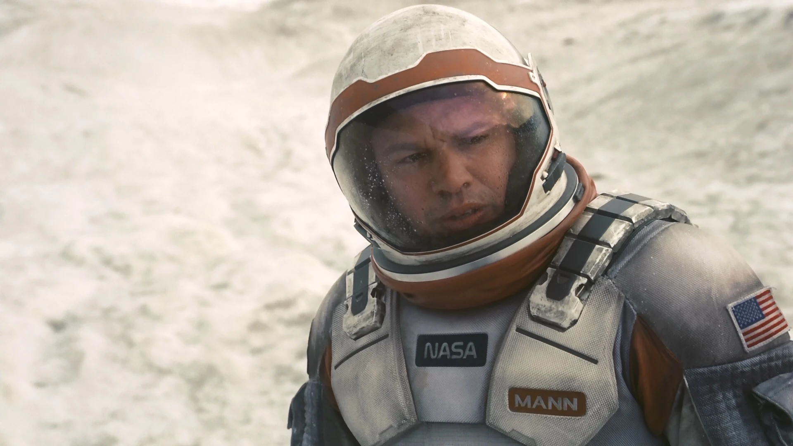

Synopsis
In the late 21st century, Earth is dying. Civilisation faces extinction through a devastating agricultural blight that destroys crop after crop, making the air unbreathable and life unsustainable. On a farm in rural America, Cooper, a former NASA pilot turned farmer, raises his children while struggling to survive in a world that no longer has a place for explorers.
A series of mysterious gravitational anomalies leads Cooper to a secret NASA facility, where Professor Brand reveals humanity's last plan: travel through a wormhole discovered near Saturn and find a new home among the stars. Cooper is recruited to pilot the Endurance on a mission that may save the species but will force him to abandon his children, possibly forever.
What follows is a journey through space and time that defies the laws of physics and the limits of paternal love. Amid black holes, time dilation and the betrayal of human nature, Cooper and his crew discover that the greatest obstacle to humanity's survival is not the universe. It is humanity itself.
Interstellar is a meditation on love as a cosmic force, on sacrifice, and on what makes us human when everything else fails.
Characters

A former NASA pilot turned farmer, Cooper is a man of science trapped in a dying world. Driven by his love for his daughter Murph and his hunger for exploration, he accepts the impossible mission of finding a new home for humanity.

Cooper's daughter, brilliant and furious at her father's departure. As an adult, she becomes a NASA scientist and discovers that the childhood "ghost" in her room was her father communicating across time. She is the one who solves the equation that saves humanity.

Professor Brand's daughter and a core member of the mission. She argues that love may be a measurable force in the universe. Her instinct about Edmunds' planet proves correct and in the end she alone builds the future of humanity there.

Director of NASA's secret programme. He presents Plan A and Plan B but hides a devastating secret: he knows Plan A is impossible, having sacrificed the truth in hopes of keeping the mission alive.

A NASA robot with a configurable personality, including adjustable humour and honesty settings. He sacrifices himself to enter Gargantua and collect quantum data. It is thanks to TARS that Cooper is able to transmit his message to Murph across time.

Considered the best of the astronauts sent on the Lazarus mission, Mann falsified his planet's data to be rescued. He represents the survival instinct taken to its most selfish extreme. His betrayal nearly destroys the Endurance and the entire mission.